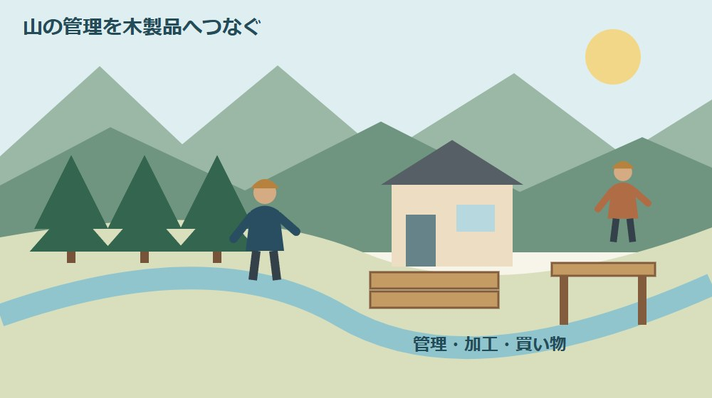
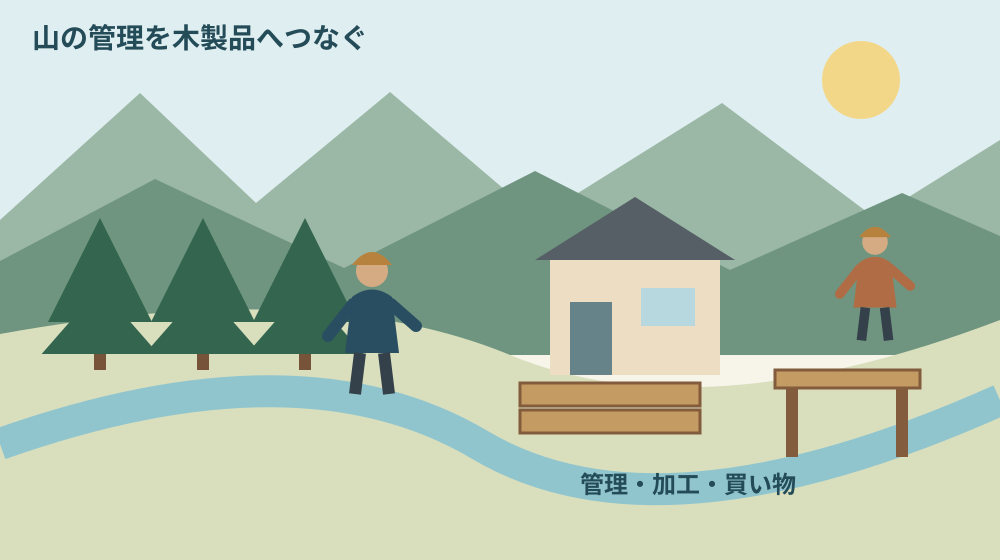
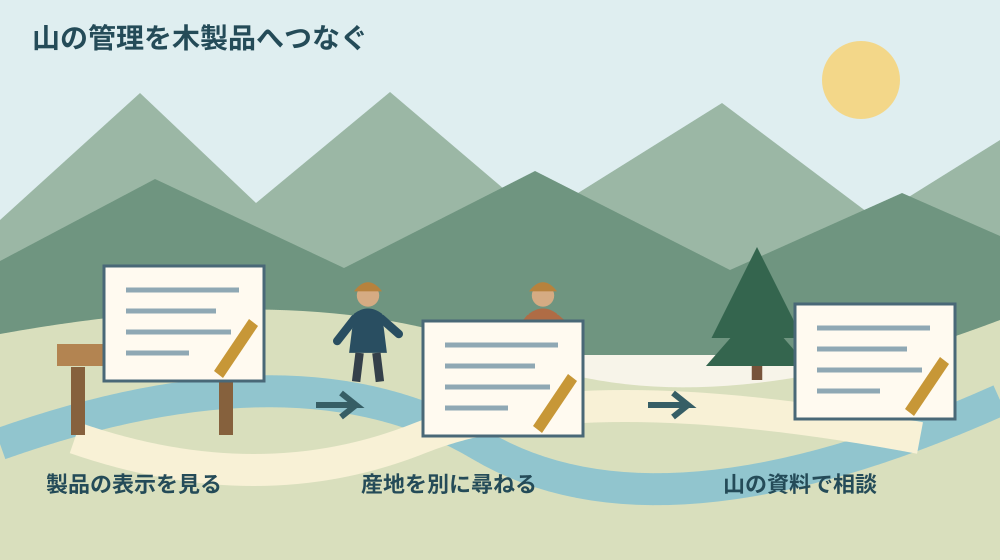

森町のFSC森林認証とは｜山と木材をつなぐ

Q. 森町のFSC森林認証は、山の管理と木材の買い物をどうつなぐ？
FSC森林認証は適切な森林管理を第三者が審査する仕組みです。森町は周辺の自治体や森林組合と連携し、山を管理するFM認証と、加工・流通をつなぐCoC認証を紹介しています。認証表示だけでは森町産や所有者の利益額までは分かりません。今日は木製品の表示を一つ見て、認証と産地を分けて確かめます。
山を管理する仕事は、木が売れる日だけではない
山林を持つ人や管理する人には、道の状態を確かめ、境界の情報を残し、作業を頼む段取りがあります。木材を買う側から見えない時間と維持費です。森町の山の価値を語るとき、まずその仕事がすでに続けられていることを忘れたくありません。
大石浩之（磐田市／不動産業）です。私は、認証という言葉を、山を持つ人の負担が消える約束として紹介したくありません。何を確かめる制度で、買う側はどこを見ればよいのか。山と木製品の間にある仕事を、森町の公式資料から整理します。
林野庁の2026年9月29日発表は、10月を木材利用促進月間、10月8日を木材利用促進の日として案内しています。関係省庁や地域、産学が連携して木材利用への理解を広げる取り組みです。今回の記事は、この10月の入口に認証表示を読むためのものです。
この記事の確認日は2026年10月1日です。木材利用促進月間が始まったことと、森町の認証内容が変更されたことは別です。町が掲載する資料の時点を明記し、2026年の認証面積や個別山林の状態を確認したかのようには書きません。
森町が紹介するFSC森林認証の仕組み
森町の森林認証案内は2023年9月5日更新です。町、森町森林組合、掛川市森林組合、掛川市、静岡県中遠農林事務所が連携し、環境や経済に配慮した森林管理のため、認証の取得と普及を進めると説明しています。
FSCはForest Stewardship Councilの略称です。森町の案内では、森林管理が環境や経済を両立させたものかを第三者機関が審査する制度として紹介されています。持ち主が自分で良い山と宣言するだけで成立するものではありません。
町の説明には、山を管理する側のFM認証と、製材・木材流通側のCOC認証という区別があります。この記事では流通側をCoCと表記します。森林が適切に管理されているかを確かめる話と、その材料が製品へ届く過程を扱う話が分かれています。
FSCジャパンの公式説明では、認証は自主的な仕組みであり、独立した第三者認証機関の審査を経て発行されます。認証の対象となる範囲も決められており、ある組織が認証を取得していても、全ての拠点や製品を含むとは限らないとされています。
意外に見落としやすいのは、認証を取った会社で買うことと、その商品が認証製品であることが同じではない点です。FSCジャパンは、認証された管理体制で扱い、対象範囲に入る製品に表示できると説明しています。店名だけでなく商品ごとに確認する理由です。
山側のFMと、加工・流通側のCoCをつなぐ
FM認証を理解するときは、山の管理そのものを見る仕組みだと考えると入口が分かります。森町の案内も山を管理する側の認証として説明しています。個々の木材の見た目や、購入者の好みを判定する制度として読むものではありません。
CoC認証は、森林由来の材料を加工し流通させる過程の管理を扱います。FSCジャパンの案内は、原材料の調達、加工、表示、販売へつながる管理を説明しています。山で認証されたという情報を、製品側で取り扱う仕組みが要るということです。
森町の説明だけを早読みすると、認証林から出た木なら誰でも自由にマークを付けられるように感じるかもしれません。しかし、FSCジャパンは組織と製品の認証範囲を示しています。木の由来と表示の条件を一緒に確認する方が誤解を防げます。
私は、FMとCoCを、山での管理記録と製品までの取扱記録がつながる仕組みとして捉えます。買い手が山の作業を直接見られなくても、確認された管理について選ぶ手がかりができます。ただし、手がかりを読むことと、個別商品の全情報を知ることは別です。
認証の細かな審査項目や取引ごとの表示方法は、この入門記事だけでは判定できません。自社で認証材として販売したい、加工した製品へ表示したい場合は、FSCの公式規格や認証機関へ確認してください。消費者として表示を見る話とは手続きが異なります。

森町の掲載面積は、いつの数字かを付けて読む
森町のページは、遠州森林認証グループが森町と掛川市内の森林を広域的に管理すると説明しています。町の境で森林の管理情報を切るのではなく、複数の管理主体が関わる取り組みとして紹介されている点が特徴です。
掲載された構成員の表は2023年6月19日時点です。森サイトは1,267.56ヘクタール、町有林サイトは45.78ヘクタールと記載されています。この記事で示す数字はその表の値であり、2026年10月の現況面積として使うものではありません。
表の区分名と、行政区域としての森町全体は同じ意味ではありません。森サイトと書いてある数値だけを、町内にある全認証林の面積と読み替えないでください。どの管理者の、どの時点の範囲を示す表かを見てから数字を使います。
町ページに掲載された認証の有効期限は2027年3月21日です。ただし、将来の日付が載っていることだけで、個別の山林が現在も対象だと判定はできません。所有する山が含まれるか、現在の認証状況はどうかは、関係する窓口への照会事項として残します。
山林の場所自体が曖昧な場合は、認証の加入相談より前に、所在地や地番を整理する必要があります。森町の山林を森林クラウドで調べる記事も入口になります。地図で見る準備と、境界や認証範囲の確定は分けて進めてください。
良い点｜買う人にも森林管理を選ぶ手がかりができる
森林認証の良い点は、木材の見た目だけでは分からない管理のあり方を、買う側が確認する入口を持てることです。森町の案内も、消費者が認証された木材や木製品を選ぶことで、適切な森林管理を支援できるという役割を説明しています。
私は、森町の山の仕事に関心を持つ入口が、山林所有者だけに限られない点を評価します。木製品を選ぶ人、建物の修繕を相談する家族、加工や販売をする事業者にも関わる話になります。山へ入れない人も、商品表示を見るところから参加できます。
複数の自治体や森林組合が連携する形も、所有者が単独で全てを調べる負担を考える際の手がかりです。ただし、グループに入れば費用が一定額安くなると確認したわけではありません。管理方法や加入条件を相談する相手が見えることを、まず利点として捉えます。
森町には、森林環境譲与税の使途を公表する公式ページもあります。森林認証とは別の仕組みですが、山の管理を支えるお金の入口を読む資料になります。認証と財源を混ぜずに見るため、森町の森林環境譲与税の記事も合わせて案内します。
注文したい点｜認証は維持費や産地の答えを全部は持たない
森町の森林認証紹介ページからは、認証による販売価格の上乗せ額や、所有者の具体的な負担額は分かりません。認証を取れば木が高く売れる、管理費を回収できる、と金額の結論へ飛ばないことです。検討する山林の条件に沿って別に確認します。
FSCの認証表示と「森町産」という産地表示も、別の問いです。森町に認証林があるからといって、店で見つけたFSC表示の木製品が森町の木からできているとは言えません。地域材を選びたい場合は、認証の確認に加えて、材料の産地を販売者へ尋ねます。
木材の寸法、用途に合う性能、納期、価格、施工条件などは、商品や計画ごとの確認事項です。認証があることを理由に、建築材料としての全条件が満たされるとは判断しません。住宅の修繕に使うなら、設計や施工の担当者へ用途を示して相談してください。
私は、認証の紹介に管理者の負担や相談の入口が併記されると、所有者が次へ進みやすいと感じます。環境への良さだけでは、費用を払う家族の判断に届きません。参加する条件、継続して行う作業、記録の担当を確認できることが必要です。
山林の担い手や維持費を認証一つで解消することはできません。だからこそ、今すぐ大きな木材購入や加入を決めるのではなく、手元の製品の表示を一つ読む小さな行動を提案します。知らない言葉を一つ解くところからでも、管理する人への理解を深められます。
対案・結論｜木製品の認証表示を一つ確認する
今日の確認は、手元や売場にある木製品の表示を一つ見ることです。商品本体、包装、商品説明のどこに認証に関する表示があるか探します。表示が見つからない場合、直ちに不適切な材料だと決めつけず、「確認できない」と記録するところで止めます。
表示があれば、商品名と認証に関する説明を一緒に見ます。店全体の紹介なのか、その商品についての表示なのかを区別してください。読み方が分からない場合は、FSCジャパンの公式案内へ戻り、販売者には対象の商品を具体的に示して尋ねます。
森町の木材とのつながりを知りたいなら、「この製品の材料の産地はどこですか」と質問を追加します。認証の有無と産地が別々に分かれば、何を優先して選びたいか考えられます。認証表示から産地を推測し、家族へ森町産と紹介しないことです。
買う予定がない日でも、この確認はできます。今ある製品を長く使いたい人が、認証を知ったから買い替える必要はありません。次に必要な品物を選ぶときの質問が一つ増えた。その状態を今日の成果にするのが、無理のない関わり方だと私は考えます。

山林所有者が相談前にそろえる資料
森町の山林所有者が認証について相談する場合は、山の所在地と地番、手元にある図面、現在誰へ管理を頼んでいるかを整理すると説明しやすくなります。町の森林認証案内にある林政係の電話は0538-85-6317です。まず相談先や必要資料を尋ねてください。
確認したい内容は、自分の山が認証対象か、参加を考えるならどの条件があるか、費用や記録の担当は誰か、という順に分けられます。ここで挙げるのは相談の下書きです。加入の必要書類や審査費用を、公式に確定した一覧として示すものではありません。
所有者と実際に管理する人が違う場合は、どちらが何を把握しているかも確認します。家族が所在地を知り、森林組合などが作業履歴を持つことも考えられます。情報を一人で全部答えようとせず、資料の持ち主をたどれるメモをつくる提案です。
伐採を具体的に考えている場合は、認証の相談だけで必要な手続きが済んだとは扱えません。森町の伐採届と確認順序も参照し、対象森林や作業計画に応じて担当窓口へ確認してください。認証の話と、伐採などの手続きは別に照会します。
家族に残す記録｜認証、産地、費用を三つに分ける
森林認証に関する記録には、認証の確認結果、材料の産地、費用の説明を別々に残します。「良い木だそうです」だけでは、何が確かめられたのか分かりません。商品名や山の地番など、対象を特定する情報と一緒に書く必要があります。
公式ページを保存するなら、ページの更新日と自分が見た日を区別します。2023年の表を2026年に閲覧しても、表の基準日は2023年のままです。家族が後から数字を見たときに、確認日の新しさと情報の新しさを混同しないための記録です。
費用の説明を受けた場合は、初回だけの費用か、継続して発生する費用か、誰が負担するかを尋ねます。木材の売却代金の見込みと管理費の見積りも分けます。今回の資料に金額がない以上、空欄を適当な相場で埋めないようにしてください。
家族へ情報を渡すときは、次に聞くことを一つ残します。認証対象か未確認ならその照会を、費用が未確認なら条件の確認を引き継ぎます。山を引き継ぐ人が最初から全て調べ直す負担を減らすことも、所有者が今できる準備です。
大石の視点｜山を守る人の手間まで見える買い方にする
私は、認証を知る価値は、木を買うときに管理の仕事を思い浮かべられることにあると考えます。きれいな木目や価格だけでなく、どんな管理のもとで届いたのかを尋ねられる。山で働く人と消費者の間に、確認できる言葉が増えます。
私なら、木製品を選ぶ場面で、認証表示と産地の説明を別々に指で追います。これは購入体験の報告ではなく、私の考え方です。表示を見て安心した気持ちになっても、森町産か、用途に合うか、予算に収まるかは、まだ別の質問として残します。
正直に言えば、認証が所有者の負担軽減へどこまで結び付くかは、町の紹介だけでは判断できず、私にも迷いがあります。制度の方向に共感することと、家族の維持費を見積もれることは違います。分からない金額を良い話で埋めない姿勢を保ちたいと思います。
森町の山を続けていくには、担い手と維持費、後継へ渡す記録の問題が残ります。それを所有者だけの責任として語るつもりはありません。買う人は表示を読み、所有する人は資料を一つ残す。立場ごとの小さな確認を、今日の行動にできます。
まとめ｜表示の先にある管理を、確かめられる範囲から
森町のFSC森林認証は、森林管理側のFMと、加工・流通側のCoCを分けて読むと役割がつかめます。町の掲載面積は2023年6月19日時点の資料です。認証による価格の上乗せや所有者負担は、掲載内容からは確認できませんでした。
10月の木材利用促進月間には、木製品の認証表示を一つ確かめてください。森町産かどうかも知りたいなら産地を別に尋ねます。大きな購入や加入の決断を急がず、山を管理する人の仕事へつながる質問を一つ持つことから始められます。
よくある質問
森町の森林認証は、山の管理、製品の取扱い、産地、費用を分けて確認すると理解しやすくなります。
FM認証とCoC認証は何が違いますか？
森町の案内は、FM認証を山を管理する側、CoC認証を製材・木材流通側の認証として説明しています。森林管理そのものと、材料が製品へ届く過程の管理を分けて考えると整理できます。認証取得組織の全製品が自動的に対象になるわけではありません。商品や取引の詳しい表示条件はFSCの公式情報で確認してください。
FSC表示の木製品なら森町産ですか？
FSCの認証表示だけで森町産とは判断できません。認証された管理と、材料の産地は別の情報です。森町の木材を選びたい場合は、対象の商品名を示して販売者へ産地を尋ねてください。森町に認証林があることは、店頭の全ての認証製品が森町の材料を使っていることを意味しません。
認証を取れば、山の木が高く売れますか？
森町の森林認証紹介ページには、販売価格の上乗せ額や所有者の負担額が記載されていません。認証だけで利益や管理費の回収を約束できません。検討する山林の所在地、管理状況、相談したい内容を整理し、町の林政係0538-85-6317などへ相談先を確認してください。費用や取引条件は個別に確かめる必要があります。
実家や土地の資料を家族で整理する場合は、実家カルテも利用できます。売却未定でも使える本サイト運営会社の民間サービスです。森町や各団体の公式手続ではなく、利用は任意です。
公式情報源
2026年10月1日確認（2026年10月確認）。制度・数値・営業や受付状況は変わる場合があります。行動前に公式情報を再確認し、個別の建築・契約・雇用・山林管理などの判断は担当窓口や専門家に相談してください。